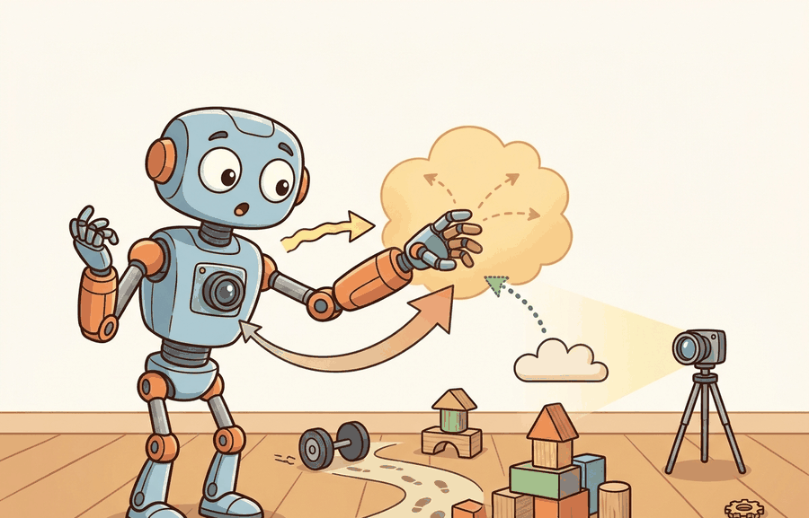

"Forward kinematics never argues. You give it the angles; it tells you where the hand is. The chain just multiplies."
Section 5.5

This section assumes familiarity with homogeneous transforms and frame composition from section 4.4. The forward kinematics map computed here becomes the oracle for inverse kinematics in section 5.6 and the foundation for Jacobian derivation in section 5.7. Those ideas recur throughout Part IV, where trajectory planning and whole-body control depend on the same product-of-transforms structure.
A surgeon's robot pauses mid-procedure: the controller has joint angles from encoders but needs the exact 3-D position of the instrument tip before committing the next cut. Forward kinematics answers that question in microseconds by chaining one matrix multiply per joint. Every modern robot arm, humanoid, and dexterous hand depends on this map: given the angles, where is the end-effector? Right now, as whole-body manipulation and surgical robotics push toward real-time replanning, a fast, differentiable FK function is the indispensable oracle for inverse kinematics, Jacobians, and trajectory optimization. You will build and verify that oracle here, and use it in every control section that follows.
This section develops the technical contract for Forward kinematics into a usable mental model. First we define the object of study, then we connect it to the agent loop, then we test it with a compact implementation.
The key question in Forward kinematics is practical: what must the agent know, what can it observe, what action is available, and what evidence shows that the action worked under the stated conditions?
A representation earns its place when it changes the measurable action interface. In Forward kinematics, the reader should keep asking which decision becomes easier, safer, or more reliable.
Theory
For Forward kinematics, the practical design rule is to make the interface inspectable before optimization begins: inputs, outputs, units, latency, bounds, and failure labels should all be visible in the saved artifact.
Forward kinematics answers the easier direction of the arm-motion question: given joint values, where is the tool? It is deterministic once the chain, joint values, and tool frame are fixed. A 6-joint arm like the UR5 requires exactly 6 matrix multiplies to locate the tool tip anywhere in its workspace; a 7-joint humanoid arm requires 7. The count never grows with workspace complexity, only with the number of joints. That makes it the baseline oracle for inverse kinematics, trajectory tracking, calibration, and replay debugging.
The product-of-transforms view is useful because each link contributes a local transform, while the final pose lives in the base frame. For a planar two-link arm, the end-effector position is $x=l_1\cos q_1+l_2\cos(q_1+q_2)$ and $y=l_1\sin q_1+l_2\sin(q_1+q_2)$. The same composition idea scales to spatial arms with homogeneous transforms.
Think of the transform chain like a series of hiking legs given as compass bearings from your current position: "walk 200 m north-east, then turn 40 degrees left and walk 150 m, then turn right and walk 80 m." Each leg is stated relative to where the previous leg left you, so the directions only make sense when followed in order. The final position depends on every accumulated turn and distance, not just the last one. The matrix product works exactly the same way: each $T_i$ is a local step that inherits all the orientations and offsets that came before it, so multiplying the matrices in sequence is the same as following the hiking legs end to end.
Each homogeneous transform $T_i$ encodes both rotation and translation in one $4\times4$ matrix, so the chain $T_{01}T_{12}\cdots T_{ne}$ is a single matrix product regardless of the number of joints. This is not merely convenient notation: it means every downstream frame inherits accumulated rotation and offset automatically, without separate bookkeeping. The alternative, tracking each frame's position and orientation separately, requires an explicit recursion that is error-prone when joints share axes or when tool offsets are added. The matrix product also composes smoothly with Jacobian computation and with libraries such as Pinocchio and Drake that differentiate through the same product structure.
Each joint in a serial arm needs to describe two things: the axis it rotates or slides along, and the rigid offset that positions the next joint relative to it. The DH convention encodes both with exactly four numbers per joint: joint angle, link offset along the joint axis, link length along the common perpendicular, and the twist angle between consecutive joint axes. This minimal parameterization matters on real hardware because every number corresponds to a measurable geometric property of the machined link. A URDF axis-sign error or a misread link offset propagates through every downstream frame silently, placing the tool millimeters off target without triggering any exception. Catching that error at the home configuration, before any motion begins, is why the verification recipe starts there.
A common assumption is that FK can be "run in reverse": give a desired end-effector pose, invert the function, and read off the joint angles. FK does not work that way. FK is a many-to-one map: multiple joint configurations can produce the same end-effector pose, and some poses fall outside joint limits entirely. A robot acting in the world needs joint commands, not just a target pose. You cannot bypass inverse kinematics by treating FK as reversible. Think of FK as a one-way oracle: it flows from joint space to task space only. Going the other direction is a separate, ill-posed problem that requires the dedicated solvers in Section 5.6.
Worked Example
The example computes forward kinematics for a planar two-link arm by chaining standard Denavit-Hartenberg transforms, then cross-checks the result against the closed-form expression $x=l_1\cos q_1+l_2\cos(q_1+q_2)$, $y=l_1\sin q_1+l_2\sin(q_1+q_2)$. Agreement between the general chain and the hand formula is the oracle every IK and control test reuses.
import numpy as np
def dh(theta, d, a, alpha):
"""Standard (distal) DH homogeneous transform."""
ct, st = np.cos(theta), np.sin(theta)
ca, sa = np.cos(alpha), np.sin(alpha)
return np.array([[ct, -st*ca, st*sa, a*ct],
[st, ct*ca, -ct*sa, a*st],
[0, sa, ca, d],
[0, 0, 0, 1]])
l1, l2 = 0.5, 0.4
q = np.deg2rad([35.0, 60.0])
# DH table for a planar RR arm: alpha=0, d=0, a=link length
T = dh(q[0], 0, l1, 0) @ dh(q[1], 0, l2, 0)
p_chain = T[:3, 3]
# Closed-form planar FK
x = l1*np.cos(q[0]) + l2*np.cos(q[0]+q[1])
y = l1*np.sin(q[0]) + l2*np.sin(q[0]+q[1])
p_closed = np.array([x, y, 0.0])
print("FK via DH chain :", np.round(p_chain, 6))
print("FK closed form :", np.round(p_closed, 6))
print("match?", np.allclose(p_chain, p_closed))
# End-effector orientation = sum of joint angles for a planar arm:
print("tool heading (deg):", round(np.rad2deg(np.arctan2(T[1,0], T[0,0])), 3),
"vs", round(np.rad2deg(q[0]+q[1]), 3))
The position match validates the DH table, and the heading check validates orientation, which a position-only test would miss. This two-link FK is reused as ground truth in the inverse-kinematics example in Section 5.6.
Pinocchio's pin.forwardKinematics(model, data, q) expects joint angles in radians stored as a NumPy array of shape (model.nq,); passing a Python list or a degrees-valued array produces a silently wrong pose with no exception raised. After loading a URDF with pin.buildModelFromUrdf, call pin.neutral(model) to get a correctly shaped zero vector, then modify it in place. Cross-check the result at the home configuration against data.oMf[model.getFrameId("tool0")].translation and the manufacturer's tool-center-point specification before running any IK or control loop.
The small forward-kinematics fragment should make transform composition auditable: joint order, axis convention, link frame, base frame, and tool frame. Pinocchio and Drake then provide maintained derivatives and model parsing for real articulated systems.
Practical Recipe
- Write the observation, action, and success metric before choosing a model.
- Build a baseline that is simple enough to debug by inspection.
- Add the library implementation only after the baseline behavior is understood.
- Record failures as structured cases: perception error, state error, planning error, control error, or evaluation error.
- Run at least one perturbation test before trusting the result.
The common mistake in Forward kinematics is to celebrate the component score before checking the closed-loop handoff. The failure usually appears at the boundary: stale state, wrong frame, delayed action, saturated actuator, or metric that ignores the real task cost.
A robotics team using Forward kinematics should log not only final success, but intermediate observations, chosen actions, controller status, and recovery events. The logs reveal whether the method is solving the task or merely passing the easiest episodes.
A good embodied system makes forward kinematics visible twice: once in the design sketch and once in the replay artifact. The second view keeps the first one honest.
Differentiable and learned FK for deformable-body robots (2024-2026). Classical DH chains assume rigid links, but soft robots and cable-driven hands violate this assumption. The RoboFlex project at ETH Zurich (2024) trains a differentiable neural FK model directly on tendon-length sensors and shape sensors, achieving sub-millimeter tip accuracy on a 7-DOF (degrees of freedom) soft manipulator. The key insight is treating the FK map as a composition of learned local deformation fields rather than rigid transforms, enabling gradient flow for trajectory optimisation through the same JAX autodiff stack used for rigid systems.
FK for humanoid whole-body control at scale (2024-2025). Full-body FK for 30-plus DOF humanoids is now a bottleneck in real-time motion generation. Figure AI's 2024 technical report on Figure 01 and subsequent work from Agility Robotics on Digit describe FK pipelines that run at 1 kHz on embedded ARM processors by exploiting sparse kinematic trees: only the subtree rooted at the base of each active contact is recomputed per tick. This selective-recomputation pattern reduces FK cost by 60-70 percent on a 37-DOF humanoid without approximation, and is now integrated into Pinocchio's 3.x branch.
Uncertainty-aware FK for compliant and cable-driven mechanisms (2025-2026). The ALOHA 2 manipulation work from Stanford, Berkeley, CMU, and UPenn (2024) exposed that cable stretch and gear backlash introduce systematic FK errors exceeding 3 mm at the fingertips, larger than the inverse kinematics (IK) solver tolerance. Current research (Stanford Robotics Lab, 2025) propagates joint-angle uncertainty through the FK chain using sigma-point transforms, producing an ellipsoidal confidence region around the predicted end-effector pose rather than a point estimate. This uncertainty envelope is then consumed directly by the task-space controller's cost function.
Open problem. The analytic FK chain is closed-form and exact for rigid bodies, but the boundary between "rigid enough" and "too flexible to ignore" has no principled threshold. A tractable PhD problem: develop an online detector that monitors residuals between FK predictions and external marker tracking (e.g., AprilTags on each link) and automatically decides when a rigid-link FK model must be augmented with a learned compliance correction, triggering recalibration only when the rigid assumption is detectably violated rather than on a fixed schedule.
Can you name the observation, state estimate, action, success metric, and most likely failure mode for Forward kinematics? If not, the system boundary is still too vague.
Production Pattern
Forward kinematics sits inside the Part II robotics contract: geometry defines where things are, kinematics defines what motion is possible, dynamics defines what motion costs, control defines how errors are corrected, and sensing defines what the agent can know on time.
Consider a specific case: the Universal Robots UR5 arm has six revolute joints described by a published DH table. Running FK on the home configuration ($q=0$ for all joints) should reproduce the known home pose to within floating-point precision. If you substitute the UR5 DH parameters into the kinematic chain above and the result disagrees with the manufacturer's tool-center-point specification, the bug is almost always an axis-sign convention or a misread link offset, not a math error. MoveIt 2 uses the same URDF-derived FK when computing collision geometries for the UR5, and Pinocchio exposes an analytic Jacobian from the same model, making cross-checking between tools straightforward on a real, documented robot. Use forward kinematics as the baseline oracle for every inverse-kinematics or control experiment. The idea has an intuitive role, a formal interface, a runnable check, and a failure mode that can be reproduced.
For Forward kinematics, kinematics maps joint or body motion into task-space motion without explaining forces. Preserve joint limits, frame conventions, velocity units, and singularity margins in the artifact.
| Tool or Library | What It Handles | Verification Check |
|---|---|---|
| Pinocchio | computes articulated-body kinematics, dynamics, and derivatives | Verify model frames, joint ordering, and derivative convention against the URDF. |
| Robotics Toolbox for Python | supports practical work on Forward kinematics | Verify the library output against the hand-built baseline on one small case. |
| MoveIt 2 | supports practical work on Forward kinematics | Verify the library output against the hand-built baseline on one small case. |
| Drake | models dynamical systems, multibody plants, optimization, and controllers | Verify scalar type, plant finalization, frame convention, and solver status. |
| ROS 2 control | supports practical work on Forward kinematics | Verify the library output against the hand-built baseline on one small case. |
Use this recipe when turning Forward kinematics into code, a simulator experiment, or a robot diagnostic. The point is not to use every library. The point is to keep the hand-built baseline and the maintained-tool path comparable.
- Write the joint vector, frame target, velocity convention, and constraint set before solving.
- Check forward kinematics on a known posture, then perturb one joint and inspect the end-effector delta.
- Compare an analytic or numerical Jacobian with Pinocchio, Robotics Toolbox, or Drake on the same robot model.
- Log residual error, joint-limit distance, manipulability, and solver iteration count in one artifact.
- Treat singularities and infeasible targets as design signals, not as solver annoyances.
For Forward kinematics, compare methods only through one saved artifact that preserves the inputs, outputs, units, timestamps, latency budget, configuration, seed, metric definition, and failure labels relevant to this section. The comparison is meaningful only when the same script evaluates the same panel.
Extend the section exercise by adding one perturbation specific to Forward kinematics and one latency or uncertainty check. Save the result in the EvidenceRecord schema, then explain which library output you trust and why.
Kinematic failures often arrive as a plausible pose with an impossible motion. Inspect link lengths, joint offsets, tool transforms, axis signs, and radians versus degrees before blaming the planner. For this section, first reproduce one tiny forward-kinematics case by hand, then rerun it through Pinocchio, Robotics Toolbox for Python, MoveIt 2, Drake, or ROS 2 tf2. If the two disagree, inspect conventions and timing before changing the model.
Technical Core
Forward kinematics needs a topic-native core: variables, equations or system contracts, an algorithmic procedure, an expected output, and a failure diagnosis. Figure 5.5.T summarizes the chain this section must preserve when moving from a teaching example to a real embodied system.
$T_{0e}(q)=T_{01}(q_1)T_{12}(q_2)\cdots T_{n e}(q_n)=\prod_i \exp(\widehat\xi_i q_i)M$
The matrix product says that each joint changes the coordinate frame seen by every downstream link. The product-of-exponentials form uses screw axes $\xi_i$ and a home configuration $M$, while Denavit-Hartenberg notation uses a structured table of link offsets and twists. Either convention works only if it is used consistently.
- Evaluate the home pose $q=0$ and compare it with the robot drawing, URDF, or CAD model.
- Move one joint by a small known angle and compute the expected downstream displacement.
- Compute the full base-to-tool transform and log both translation and orientation, not only $(x,y,z)$.
- Compare the hand-built result with Pinocchio, Drake, Robotics Toolbox, or ROS 2 tf2 on the same model and joint vector.
| Contract Field | What To Specify | Why It Matters |
|---|---|---|
| State and observation | Variables, units, timestamps, frames, and uncertainty. | Prevents a model score from being mistaken for robot capability. |
| Action interface | Command type, limits, update rate, and safety fallback. | Makes the learned or planned output executable. |
| Evidence artifact | Trace, metric, configuration, seed, and failure label. | Allows baseline and library path to be compared in one pass. |
| Tool path | Modern Robotics, Pinocchio, Drake, ROS 2 tf2, MoveIt, NumPy | Shows the practical library route after the mechanism is understood. |
Expected output is a reproducible transform $T_{0e}$ whose translation, rotation, and intermediate frames match the maintained-library result on the same joint vector. A correct forward-kinematics trace is the artifact you return to when inverse kinematics, control, or perception appears inconsistent.
Forward kinematics fails quietly when a fixed tool offset is forgotten, joint angles are passed in degrees to a radians API, link-frame axes are reversed, or the code compares only tool position while orientation is wrong.
Section References
Core references for Forward kinematics: Modern Robotics; Murray, Li, and Sastry; Siciliano et al.; LaValle; and official documentation for Drake, MuJoCo, Pinocchio, CasADi, python-control, GTSAM, ROS 2, and OpenCV as applicable.
Use these references to check notation, frame conventions, units, solver assumptions, and maintained-library behavior.
Forward kinematics is useful when it makes the perception-action loop more reliable, not when it merely adds a more impressive model name.
Design a method-matched experiment for Forward kinematics. Specify the environment, observations, actions, metric, one perturbation, and the library output you would compare against the hand-built baseline.
Project Ideas
FK visualizer for a planar arm (beginner, weekend): Build a real-time 2D visualizer in Python using Matplotlib or Pygame that renders a 3-joint planar arm and updates the end-effector trace as you drag joint-angle sliders. The key challenge is keeping the DH transform chain and the plot update synchronised at interactive frame rates without recomputing the full chain on every slider event. Use NumPy for the transforms and Matplotlib widgets for the sliders.
FK accuracy audit on a simulated UR5 (intermediate, 1-2 weeks): Load the UR5 URDF into PyBullet or MuJoCo, command random joint configurations, and compare PyBullet/MuJoCo's reported link poses against your own DH-chain implementation and Pinocchio's pin.forwardKinematics, logging translation and rotation error across 10,000 samples. The key challenge is reconciling the three different frame conventions (PyBullet uses a different base-frame orientation than the UR5 DH table and Pinocchio's URDF parser) so that all three oracles agree to within 0.1 mm RMS before you trust any downstream IK or control experiment.